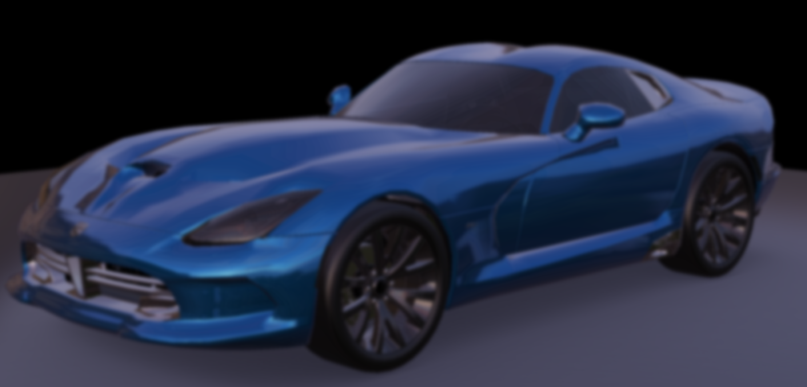

GaussianBlurEffect QML Type
Post-processing effect for blurring the scene. More...
| Since: | Kuesa 1.0 |
Properties
- blurPassCount : int
Detailed Description
GaussianBlurEffect is a post-processing effect that applies a Gaussian blur to the scene. The amount of blurring can be adjusted using the blurPassCount property.
import Kuesa 1.1 as Kuesa
Kuesa.SceneEnity {
id: root
components: [
RenderSettings {
Kuesa.ForwardRenderer {
postProcessingEffects: [
GaussianBlurEffect {
blurPassCount: 2
}
]
}
}
]
...
}
Example

Blur effect applied on a Kuesa scene.
Note: Increasing the number of passes too high may adversely impact rendering performance, especially on lower-end GPUs.
Property Documentation
the number of blur passes
This is the number of times to apply the blur filter. More passes result in stronger blurring effect but take longer to render.